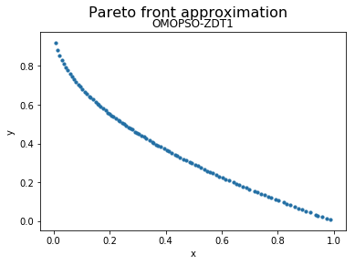

OMOPSO¶
Example¶
[1]:
from jmetal.algorithm.multiobjective.omopso import OMOPSO
from jmetal.operator.mutation import UniformMutation
from jmetal.operator.mutation import NonUniformMutation
from jmetal.problem import ZDT1
from jmetal.util.archive import CrowdingDistanceArchive
from jmetal.util.termination_criterion import StoppingByEvaluations
problem = ZDT1()
mutation_probability = 1.0 / problem.number_of_variables
max_evaluations = 25000
swarm_size = 100
algorithm = OMOPSO(
problem=problem,
swarm_size=swarm_size,
epsilon=0.0075,
uniform_mutation=UniformMutation(probability=mutation_probability, perturbation=0.5),
non_uniform_mutation=NonUniformMutation(mutation_probability, perturbation=0.5,
max_iterations=int(max_evaluations / swarm_size)),
leaders=CrowdingDistanceArchive(100),
termination_criterion=StoppingByEvaluations(max=max_evaluations)
)
algorithm.run()
solutions = algorithm.get_result()
We can now visualize the Pareto front approximation:
[3]:
from jmetal.lab.visualization.plotting import Plot
from jmetal.util.solution import get_non_dominated_solutions
front = get_non_dominated_solutions(solutions)
plot_front = Plot(plot_title='Pareto front approximation', axis_labels=['x', 'y'])
plot_front.plot(front, label='OMOPSO-ZDT1')

API¶
- class jmetal.algorithm.multiobjective.omopso.OMOPSO(problem: ~jmetal.core.problem.FloatProblem, swarm_size: int, uniform_mutation: ~jmetal.operator.mutation.UniformMutation, non_uniform_mutation: ~jmetal.operator.mutation.NonUniformMutation, leaders: ~jmetal.util.archive.BoundedArchive | None, epsilon: float, termination_criterion: ~jmetal.util.termination_criterion.TerminationCriterion, swarm_generator: ~jmetal.util.generator.Generator = <jmetal.util.generator.RandomGenerator object>, swarm_evaluator: ~jmetal.util.evaluator.Evaluator = <jmetal.util.evaluator.SequentialEvaluator object>)[source]¶
Bases:
ParticleSwarmOptimization